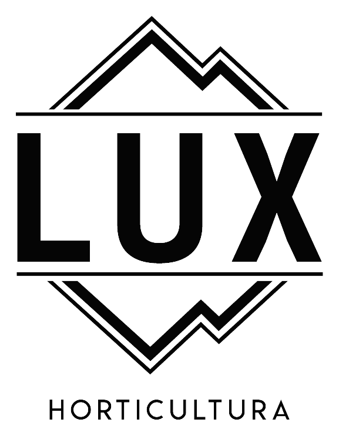
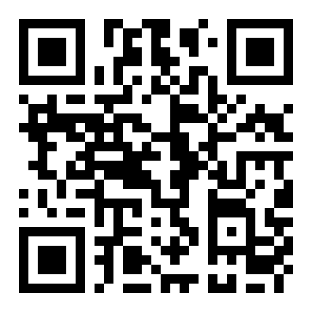

Escaneá el código y abrí la demostración en tu teléfono. Sin cuenta y sin instalar nada.

appluxhorticultura.com.ar/demo
Es una muestra con datos de ejemplo: no está conectada a ninguna luminaria. La app real se abre desde el equipo, en la red local o por internet.